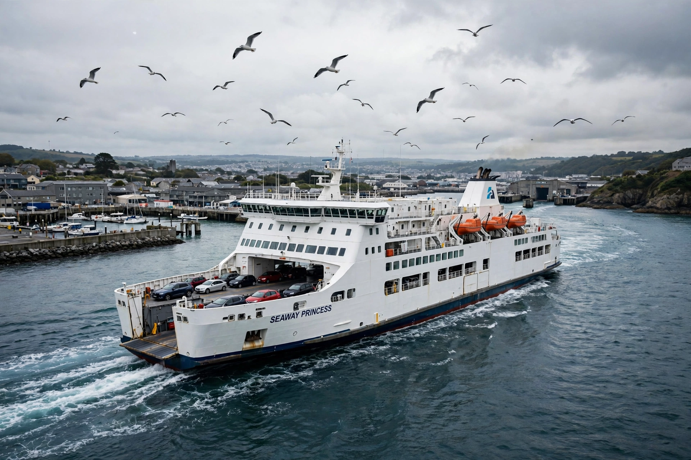

Ferry
From Wikipedia, the free encyclopedia

A ropax ferry departing.A ferry is a vessel used to carry passengers, vehicles and cargo across a body of water on a scheduled route, forming part of the public transport network in many regions. Ferries range from small foot-passenger boats and river crossings to large cruise-ferries carrying over 2,000 passengers and hundreds of cars on overnight routes in the Baltic, Mediterranean and North Seas.
Types
Double-ended ferries shuttle short crossings without turning; catamaran fast ferries serve island routes at 35–45 knots; train ferries once carried rail cars across straits (now rare); and ropax vessels combine truck freight with passengers. Cable ferries and reaction ferries cross rivers using the current or a fixed cable.
Notable networks
BC Ferries (British Columbia), Washington State Ferries and the Staten Island Ferry serve North America; Sydney Ferries crisscross its harbour; Istanbul\'s Şehir Hatları ferries link Europe and Asia. In Europe, routes such as Dover–Calais and Helsinki–Tallinn carry millions yearly, and Norway is pioneering battery-electric car ferries such as Ampere (2015).
Safety
Ferry disasters — Herald of Free Enterprise (1987), Estonia (1994, 852 deaths), Sewol (2014) — have driven rules on watertight subdivision, bow-door design and stability, especially for ro-ro vessels whose open car decks are vulnerable to flooding.